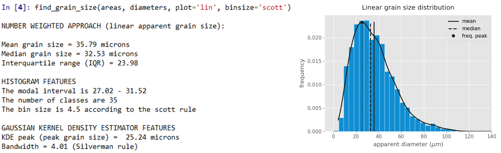
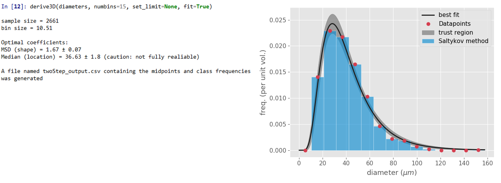

GrainSizeTools script is a free open-source cross-platform script written in Python that provides several tools to visualize and characterize the grain size in polycristalline materials from thin sections. The script is suitable to use for paleopiezometry (paleowattmetry) studies and to derive the actual 3D grain size distribution using the Saltykov and the two-step methods. The script requires measuring the grain sectional areas from a thin section and does not require a previous experience with Python programming language (see documentation or FAQ). For users with coding skills, the script is organized in a modular way using Python functions, which facilitates to modify, reuse or extend the code if needed.
#
Features at a glance
- Load and extract data from txt and csv files generated by the ImageJ or any other applications.
- Calculate the apparent diameters of the grain profiles via the equivalent circular diameter and to correct, if required, the diameters by adding the perimeter of the grains.
- Estimate different 1D grain size measures including the mean, median, area-weighted mean, and frequency peak of the apparent grain sizes, the latter using the Gaussian Kernel Density Estimate method (apparent grain sizes can be linear, log ,or square root).
- It implements several algorithms to estimate the optimal bin size of histograms and the optimal bandwidth of the Gaussian KDE based on the population features.
- Derive the actual 3D grain size distribution from thin sections (2D data) using the Saltykov method, including the volume estimation of a particular grain size fraction defined by the user.
- Estimate the shape of the 3D grain size distribution using the two-step method and a single parameter (the MSD parameter).
- It produces different ready-to-publish plots, allowing to save the graphical output as a bitmap or vector images (see the image above for examples).
#
Download
You can download the script at the following sites (Last release 2017/03/13, v1.3.2):
https://github.com/marcoalopez/GrainSizeTools/releases
http://figshare.com/articles/GrainSizeTools_script/1383130
https://sourceforge.net/projects/grainsizetools/
https://github.com/marcoalopez/GrainSizeTools/releases
http://figshare.com/articles/GrainSizeTools_script/1383130
https://sourceforge.net/projects/grainsizetools/
#
Documentation
#
Screenshots

Estimation of different apparent grain size measures, in this example using a linear scale

Plots showing the area-weighted, square-root, and logarithmic apparent grain size distributions

Estimated grain size distribution and volume faction using the Saltykov method

Applying the two-step method to estimate the best lognormal distribution

Boxplot comparing different grain size distributions
#
Citation guidelines
If you need to cite the script or the methods the following references are available:
Script reference
Lopez-Sanchez, Marco A. (2016): GrainSizeTools script. figshare. http://dx.doi.org/10.6084/m9.figshare.1383130
Frequency peak grain size based on Gaussian KDE
Lopez-Sanchez MA and Llana-Fúnez S (2015) An evaluation of different measures of dynamically recrystallized grain size for paleopiezometry or paleowattmetry studies. Solid Earth 6, 475-495. doi:10.5194/se-6-475-2015
Two-step method
Lopez-Sanchez MA and Llana-Fúnez (2016) An extension of the Saltykov method to quantify 3D grain size distributions in mylonites. Journal of Structural Geology, 93, 149-161. doi:10.1016/j.jsg.2016.10.008.
Saltykov method
The method as implemented in the GrainSizeTools script is described in the Appendix A in Lopez-Sanchez and Llana-Fúnez (2016) doi:10.5194/se-6-475-2015
The procedure is partially based on general formulation developed by Sahagian and Proussevitch (1998) J. Volcanol. Geotherm. Res. 84, 173–196. doi:10.1029/95JB02500
Script reference
Lopez-Sanchez, Marco A. (2016): GrainSizeTools script. figshare. http://dx.doi.org/10.6084/m9.figshare.1383130
Frequency peak grain size based on Gaussian KDE
Lopez-Sanchez MA and Llana-Fúnez S (2015) An evaluation of different measures of dynamically recrystallized grain size for paleopiezometry or paleowattmetry studies. Solid Earth 6, 475-495. doi:10.5194/se-6-475-2015
Two-step method
Lopez-Sanchez MA and Llana-Fúnez (2016) An extension of the Saltykov method to quantify 3D grain size distributions in mylonites. Journal of Structural Geology, 93, 149-161. doi:10.1016/j.jsg.2016.10.008.
Saltykov method
The method as implemented in the GrainSizeTools script is described in the Appendix A in Lopez-Sanchez and Llana-Fúnez (2016) doi:10.5194/se-6-475-2015
The procedure is partially based on general formulation developed by Sahagian and Proussevitch (1998) J. Volcanol. Geotherm. Res. 84, 173–196. doi:10.1029/95JB02500
#
Licenses
GrainSizeTools script is licensed under the Apache License, Version 2.0 (the "License")
The documentation of GrainSizeTools script is licensed under a Creative Commons Attribution-ShareAlike 4.0 International License
The documentation of GrainSizeTools script is licensed under a Creative Commons Attribution-ShareAlike 4.0 International License
Copyright © 2017
Marco A. Lopez-Sanchez
Information presented on this website is provided without any express or implied warranty and may include technical inaccuracies or typing errors; the author reserve the right to modify or enhance the content of this website without previous notice at any time. This webpage is not liable for the content of external links and is not liable either for the content, text and pictures provided on the website by the author.
Hosted on GitHub Pages — This article was created with Substance, an open self-publishing system.